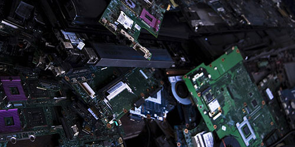

What is e-waste?
Wikipedias definition of e-waste is:
E-waste or electronic waste is created when an electronic product is discarded after the end of its useful life.
Some examples of e-waste:
Large Appliances:
- Computers
- Televisions
- Mobile Phones
Small Appliances:
- Irons
- Watches
- Kettles
- Hair Dryers
IT Equipment:
- Laptops
- Printers
- Monitors
- Mobile Phones
and is increasing with the rise of sales of electronic products.